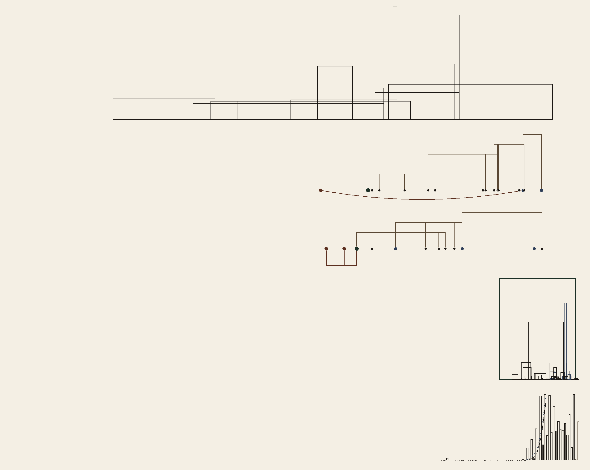

What is drawn on the cover
Five timelines, one span. The left edge of every row is 1900. The right edge is 2026. Nothing on the drawing is labeled. This page is the key.
Reading down the drawing:
- Writers, by years and words.
- The Merkle tree, and what followed it.
- Diffie–Hellman, and what followed it.
- Chains, by launch year, stars, and size.
- The phrase “smart contract,” in books and in citations.
1. Writers
Each open rectangle is one writer. The left side is the first year counted, the right side is the last. A single year is a thin stroke. The height is words divided by the number of years in that span, so a long career is wide and a dense one is tall. Twelve spans are drawn. Where a published count was itself a range, the middle of that range is what was used.
2. The Merkle tree
Ralph Merkle’s hash tree is 1979. The marks before and after it are the things it came from and the things that used it: the 1980 paper and the 1982 patent, Merkle signatures, the 1993 timestamping work and Surety, then Git, ZFS, Dynamo, Cassandra, Bitcoin, Certificate Transparency, IPFS, and Ethereum. Patricia trees are older, 1968, and they meet the hash tree at Ethereum. Verkle trees are the last mark, 2018. A line joins a thing to what it led to. The arc that hangs below the row is Patricia meeting Ethereum.
3. Diffie–Hellman
The public paper is November 1976. Ellis, 1970, and Williamson, 1974, are the same exchange, written at GCHQ and not published until 1997. They are drawn as the step that hangs below the row. After 1976: the 1980 patent, elliptic curves, Station-to-Station, MQV, SSL, IKE, ECDH, Signal’s X3DH, and TLS 1.3.
4. Chains
The left edge of each box is the day that chain launched, from Bitcoin on 3 January 2009 through the later chains. The height is GitHub stars on that chain’s client, as of 22 September 2026. The width is the square root of the dollar market cap that day, from CoinGecko, so a coin worth four times as much is twice as wide. Base has no traded coin in that table, so it stays a thin stroke. Bitcoin is the deep box: the most stars, and a market cap that fills most of the chain era once the years are set on a 1900–2026 line.
5. Smart contracts
Four series, each scaled to its own highest point, so the shapes can be read against each other.
The solid line is the singular “smart contract” in Google Books, English, the 2019 corpus, counted per million words. The dotted line is the plural, “smart contracts.” That corpus stops in 2019. The lines end there. They do not fall to zero.
The wider bar in each year is citations. The thinner bar, on the right of that year, is the number of works. Both come from Semantic Scholar, title and abstract, the phrase “smart contract” or “smart contracts,” fetched 23 September 2026: 28,284 works, and 400,240 citations on those works. A citation is counted in the year the work was published, not the year someone cited it. 2026 is a partial year, drawn quieter. Works dated before 2014 are left off the bars. Most of that earlier weight is Szabo in 1997.
